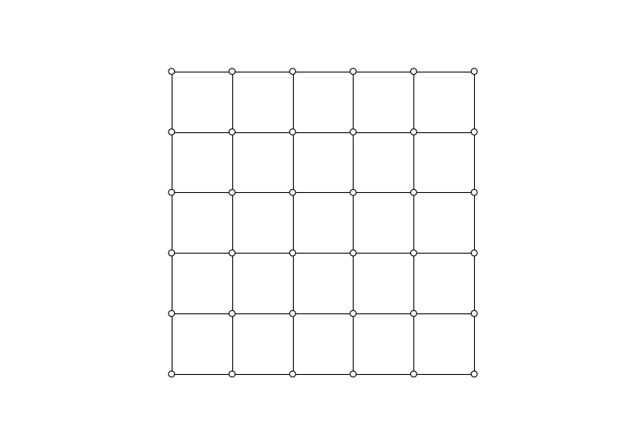

Plotter
-
class
compas.plotters.Plotter(figsize=(16.0, 12.0), dpi=100.0, tight=False, **kwargs)[source] Bases:
objectDefinition of a plotter object based on matplotlib.
- Parameters
figsize (tuple, optional) – The size of the plot in inches (width, length). Default is
(16.0, 12.0).- Other Parameters
dpi (float, optional) – The resolution of the plot. Default is
100.0.tight (bool, optional) – Produce a plot with limited padding between the plot and the edge of the figure. Default is
False.fontsize (int, optional) – The size of the font used in labels. Default is
10.
-
figure_size tuple – The size of the plot in inches (width, length).
-
figure_dpi float – The resolution of the plot.
-
figure_bgcolor str, tuple, dict – The color specififcation for the figure background. Colors should be specified in the form of a string (hex colors) or as a tuple of RGB components.
-
axes_xlabel str – The label on the X axis of the plot.
-
axes_ylabel str – The label on the Y axis of the plot.
-
defaults dict – Dictionary containing default attributes for points, lines and polygons.
Default point attributes:
‘point.radius’ : 0.1
‘point.facecolor’ : ‘#ffffff’
‘point.edgecolor’ : ‘#000000’
‘point.edgewidth’ : 0.5
‘point.textcolor’ : ‘#000000’
‘point.fontsize’ : 10
Default line attributes:
‘line.width’ : 1.0
‘line.color’ : ‘#000000’
‘line.textcolor’: ‘#000000’
‘line.fontsize’ : 10
Default polygon attributes:
‘polygon.facecolor’ : ‘#ffffff’
‘polygon.edgecolor’ : ‘#000000’
‘polygon.edgewidth’ : 0.1
‘polygon.textcolor’ : ‘#000000’
‘polygon.fontsize’ : 10
Notes
For more info, see 1.
References
- 1
Hunter, J. D., 2007. Matplotlib: A 2D graphics environment. Computing In Science & Engineering (9) 3, p.90-95. Available at: http://ieeexplore.ieee.org/document/4160265/citations.
Examples
import compas from compas.datastructures import Mesh from compas.plotters import Plotter mesh = Mesh.from_obj(compas.get('faces.obj')) plotter = Plotter(figsize=(10, 7)) points = [] for key in mesh.vertices(): points.append({ 'pos' : mesh.vertex_coordinates(key), 'radius' : 0.1, 'facecolor': '#ffffff' }) lines = [] for u, v in mesh.edges(): lines.append({ 'start': mesh.vertex_coordinates(u), 'end' : mesh.vertex_coordinates(v), 'width': 1.0 }) plotter.draw_points(points) plotter.draw_lines(lines) plotter.show()
Methods
__init__([figsize, dpi, tight])Initialises a plotter object
clear_collection(collection)Clears a matplotlib collection object.
draw_arrows(arrows)Draws arrows on a 2D plot.
draw_lines(lines)Draws lines on a 2D plot.
draw_points(points)Draws points on a 2D plot.
draw_polygons(polygons)Draws polygons on a 2D plot.
gifified(**kwds)Create a context for making animated gifs using a callback for updating the plot.
register_listener(listener)Register a listener for pick events.
save(filepath, **kwargs)Saves the plot to a file.
save_gif(filepath, images[, delay, loop])Save a series of images as an animated gif.
show([autoscale, tight])Displays the plot.
top()Bring the plotting window to the top.
update([pause])Updates and pauses the plot.
update_linecollection(collection, segments)Updates a line collection.
update_pointcollection(collection, centers)Updates the location and radii of a point collection.
update_polygoncollection(collection, polygons)Attributes
axesReturns the axes subplot matplotlib object.
bgcolorReturns the background color.
canvasReturns the canvas of the figure instance.
figureReturns the matplotlib figure instance.
titleReturns the title of the plot.